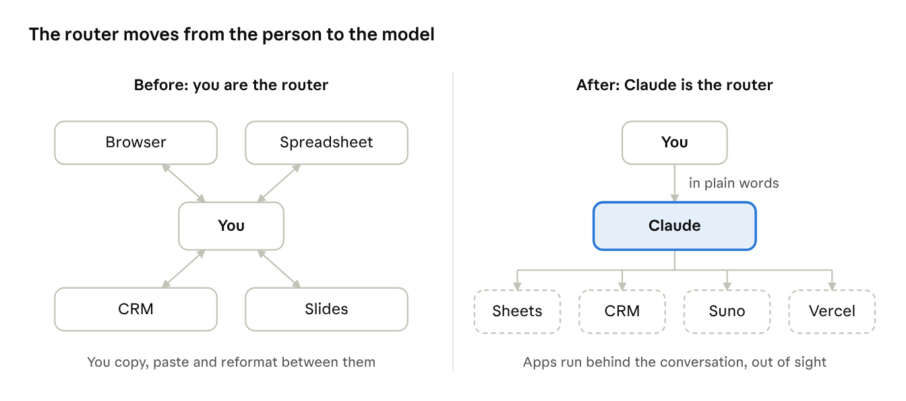
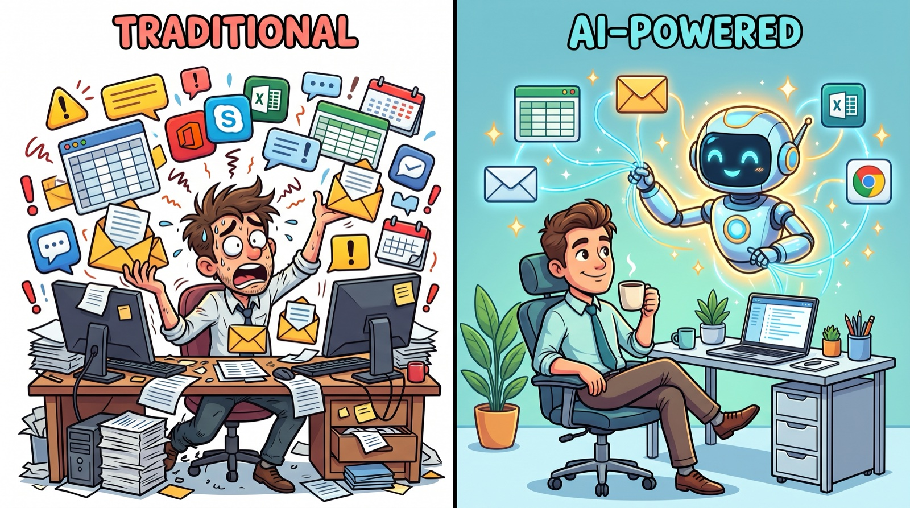

Imagine arriving at work on a Monday morning in 2028 (or 2026?). You don't open your email. You don't launch Salesforce, Excel, Slack, or your project management dashboard, and you don't spend the first hour of your week reconstructing what happened across a dozen disconnected systems over the weekend.
Instead, you ask a simple question: "Good morning. What needs my attention today?"
![An illustration titled “The Last Interface: How AI Is Becoming the Operating System”: a woman at her desk looks at a large glowing AI panel that asks “Hi — what would you like to make progress on today?” and answers a request to prepare for next week's customer review with key insights, recommendations and actions it can take now. Faded app windows for spreadsheets, project tasks, messages, CRM, meeting notes, a whiteboard and a timeline drift into the panel, and a bar at the bottom reads “App-by-app work → Question-first computing.”](last-interface-hero.jpg)
Your AI already has a briefing waiting. Three customer accounts are showing early signs of churn. Last week's sales figures have diverged from the financial forecast. An engineering decision made six months ago is creating an unexpected risk for next quarter's product launch.
Crucially, the system doesn't simply present a list of problems. It has already assembled the supporting evidence, identified possible responses, modeled their implications, and prepared an action plan. You ask a few probing questions, challenge an underlying assumption, and adjust the priorities. Then you approve the recommended actions. In seconds, the AI updates the relevant records, drafts the necessary communications, assigns follow-up tasks, and revises the project timeline. Work that once required several employees, multiple applications, and hours of manual coordination is completed through a single conversation—without opening a single application.
This is not merely a vision of a more sophisticated chatbot. It represents a fundamental inversion of the relationship between humans and computers. For decades, humans have adapted themselves to the rigid logic of software. Now, software is beginning to adapt itself to human intent. And the companies that control this new relationship may become some of the most powerful businesses in the digital economy.
The Human Was Always the Connector
For nearly half a century, the underlying architecture of personal computing has remained surprisingly consistent. We moved from command lines to graphical desktops, from desktop applications to websites, and from websites to mobile apps and cloud services. Each transition made computers more accessible, powerful, and connected, yet one essential dynamic remained unchanged: the human was still the central coordinator of the computer.

Consider what a typical knowledge worker actually does all day. To understand a market trend, you open a browser and research competing companies. To estimate the financial implications, you switch to a spreadsheet. To discuss the findings, you jump into a messaging app. To organize execution, you update a project management tracker, and to communicate the strategy, you build a slide deck. You spend your day continuously ferrying information between specialized systems—copying, pasting, reformatting, reconciling, summarizing, and translating. The software performs the discrete operations, but you coordinate the entire process.
In effect, the human has been the biological API connecting the modern enterprise. We built a multitrillion-dollar software industry around making individual tasks more efficient while leaving the connective tissue between them entirely to human beings.
Artificial intelligence challenges that arrangement at its root. Instead of translating an objective into dozens of mechanical software operations, a person can increasingly describe the outcome they want and let an intelligent system determine which tools to use, what information to retrieve, which calculations to perform, and how to assemble the results. The fundamental unit of computing is shifting from the application to the objective.
That is why the emerging competition among Anthropic, OpenAI, Google, Microsoft, and other AI labs is much larger than a race to build the smartest chatbot. The real prize is becoming the intelligent coordination layer through which people interact with the digital world. This won't replace traditional operating systems like Windows or macOS, nor will it eliminate databases, cloud infrastructure, and specialized applications. Rather, it will serve as the operating system from the user's perspective—the primary environment where work begins, context accumulates, decisions are made, and actions are executed.
It is the operating system of human intent.
From Tool-First to Question-First Computing
One of the clearest illustrations of this transition arrived with Anthropic's November 10, 2026 introduction of Claude Sheets, Claude Whiteboards, and Claude Data. At first glance, these products look like familiar competitors to Excel, Google Sheets, Miro, and traditional business intelligence platforms. But the vital development here is not the launch of another spreadsheet or whiteboard; it is the changing relationship between the user and the work itself.
Traditional software is organized around the process of producing an outcome. A spreadsheet helps you manipulate cells; a presentation app helps you arrange slides; an analytics platform helps you assemble dashboards; a project management tool helps you organize tasks. Each assumes that a human will translate a high-level business question into a sequence of mechanical operations.
AI reverses that flow. Imagine a CEO asking: "Why did our margins decline last quarter, and which three decisions would have the greatest impact on improving them?"
Traditionally, this question triggers a sprawling organizational workflow. Finance collects data, analysts reconcile numbers, department heads explain anomalies, and models are constructed, reviewed, and distilled into presentations. With sufficiently capable AI systems connected to reliable corporate data, much of that workflow begins and ends with the question itself. The AI retrieves financial and operational data, reconciles the relevant figures, tests possible explanations, and constructs an editable model.
When the CEO follows up—"What happens if we reduce customer acquisition spending by 15 percent, increase enterprise pricing by 8 percent, and postpone two planned hires?"—the assumptions shift, the calculations update instantly, and the trade-offs become immediately visible. The spreadsheet still exists, but its purpose has evolved. Rather than serving as the manual workshop where a human performs every calculation, it becomes the inspectable record of an analysis coordinated by AI.
This is the emergence of Question-First computing. The objective is not to eliminate spreadsheets, dashboards, or professional expertise—complex analysis still demands trustworthy data, sound methodology, and human judgment. The objective is to collapse the mechanical distance between a meaningful question and a defensible answer.
Anthropic's product suite points directly toward this future. While Claude Sheets, Whiteboards, and Data provide shared analytical and visual workspaces, interactive connectors now allow supported applications to open directly inside Claude, enabling users to work with tools like Adobe, Atlassian, Notion, and HubSpot without constantly switching contexts.
Strategically, this means an AI platform doesn't need to replace every specialized application; it can simply absorb them into a common intelligence layer. Sometimes the AI operates the tool in the background; sometimes the human and AI collaborate inside the same interface; sometimes the AI generates a temporary, bespoke interface just for the task at hand. The future is not necessarily screenless (headless) computing, but computing in which the interface becomes contextual, fluid, and secondary to the outcome.
The spreadsheet is no longer where the work begins. The question is.

The Meeting That Remembers Why
Perhaps the most consequential shift, however, is happening not in spreadsheets or dashboards, but in meetings.
On November 12, 2026, Anthropic introduced Claude Meetings in beta, allowing Claude to join video calls as a visible participant, answer questions, capture notes, and build documents or whiteboards in real time during the conversation. Initially available through Google Meet for eligible Team and Enterprise organizations, the feature hints at something transformative: AI as a persistent memory of organizational reasoning.
Consider a classic corporate failure mode. Six months ago, an engineering team debated the architecture of a new product. The engineers favored one approach, product management preferred another, finance raised cost concerns, and security flagged regulatory risks. After hours of debate, the organization settled on Architecture B. The final specification document records what was decided, but what happened to the why? Where are the rejected alternatives, the constraints that shaped the compromise, the assumptions everyone accepted, and the objections that seemed minor at the time? Typically, that context evaporates into scattered meeting notes, buried Slack threads, and the memories of employees who eventually leave the company.
Now imagine an AI system, operating with appropriate permissions, that preserves not just the final decision, but the tissue of reasoning behind it. When a new engineering leader joins the company months later and proposes switching to Architecture A, they don't trigger an expensive, redundant debate. Instead, the AI responds: "That approach was evaluated in March. The team rejected it because of three constraints. Two remain relevant, but the third appears to have changed. Would you like to revisit the decision?"
This is an entirely different caliber of organizational intelligence. Rather than a passive, searchable archive of transcripts, it is a living map that connects historical decisions to their underlying assumptions, alternatives, and eventual outcomes. Organizations gain the ability to recognize recurring blind spots, spot when old constraints have expired, and understand why seemingly obvious ideas were previously set aside.
While reliably reconstructing years of nuanced human reasoning—complete with unspoken politics and conflicting interpretations—remains a formidable challenge, the trajectory is clear. For the first time, institutional reasoning can become a durable asset. Furthermore, when an AI understands a meeting's agreed commitments, links them to project plans, tracks progress against goals, and flags cross-team conflicts before they become crises, much of the administrative drag of management disappears. Leadership, accountability, negotiation, and judgment remain irreplaceable, but managers can spend far less time chasing status updates and far more time making decisions.
The enterprise can finally develop a memory of why it believes what it believes—not just a database of what it knows.
The Great SaaS Unbundling
This evolution carries profound economic implications for the software industry. For two decades, Software-as-a-Service (SaaS) has been one of the greatest business models in history. Companies built empires around specialized workflows—CRM, accounting, payroll, analytics, design—by relying on a proven formula: own a valuable workflow, maintain a direct relationship with the user through a proprietary interface, and build enough switching costs to lock in retention. The more hours employees spent inside a platform's UI, the more pricing power that vendor enjoyed.
But what happens when users stop visiting the application?
Imagine a marketing director telling an AI: "Build a six-week launch campaign, produce three versions of the promotional video, prepare the landing page, and track the budget." Behind the scenes, the AI might coordinate an image generator, a video editing suite, a CMS, an ad network, and an analytics platform. The specialized software still performs the heavy lifting, yet the director interacts with a single orchestrator and never lays eyes on the underlying tools.
AI commentator Wes Roth highlighted this emerging pattern in his November 15 analysis of Claude's expanding capabilities, showcasing AI-directed creative pipelines that stitch together multiple production tools. And the principle extends across the enterprise: a finance agent coordinating accounting and forecasting engines; a sales agent bridging CRM records, proposals, and contract systems; an engineering agent working across repositories, testing environments, and deployment pipelines.
This drives a wedge between owning the capability and owning the customer relationship. It forces every software vendor to confront an existential question: If customers use your product every day but never interact with your application, whose customers are they really?
The pressure will be fiercest on applications whose primary value is simply wrapping a pleasant user interface around basic workflows. If an AI can coordinate the same outcome across existing databases or spin up a task-specific interface on the fly, a standalone point solution becomes very hard to defend.
Yet this does not spell the end of SaaS. Many software companies possess moats far deeper than their interfaces: proprietary data, trusted systems of record, regulatory compliance, complex domain logic, and mission-critical security infrastructure. In fact, AI agents may make those underlying systems more valuable by querying and utilizing them at a volume and velocity humans never could.
The likely outcome is not the death of software, but its separation into three distinct layers:
- The Experience Layer, which captures user intent and presents results.
- The Intelligence Layer, which reasons, plans, and orchestrates actions across systems.
- The Capability Layer, which provides the specialized engines, systems of record, data, and infrastructure required to execute the work.
Traditional SaaS vendors will either push upward to become orchestrators, specialize downward into indispensable capability engines, or get squeezed in the middle. The winners of the next era won't win because they have the prettiest dashboards; they will win because they control essential capabilities, trusted data, deep institutional context, or the primary interface where users express their intent.
The Connectivity Revolution
An intelligent assistant sealed inside a chat box is fundamentally limited; it can advise an organization, but it cannot coordinate one. True orchestration requires universal connectivity.
The Model Context Protocol (MCP), introduced by Anthropic as an open standard in 2024, laid the groundwork for this by establishing a common language for AI systems to connect with external tools and data sources. As that ecosystem has grown to thousands of connectors and plugins, its strategic weight lies in how it turns isolated software islands into a single, composable workflow. An AI agent can now pull a customer ticket from a support desk, cross-reference it with CRM records, link it to an open engineering bug, verify SLA terms in a signed contract, and draft a resolution across all four systems simultaneously.
This demands a fundamental shift in how software is built. For forty years, applications were designed for human eyes and hands navigating graphical menus. Going forward, software must be built for machine discovery, interpretation, and execution—creating massive opportunities for agent-native infrastructure, from granular permissioning and verification engines to structured APIs designed for autonomous action.
Simultaneously, AI is collapsing the cost of creating bespoke software. Businesses may no longer need to buy a dedicated SaaS subscription for every minor internal workflow or temporary analytical dashboard when an AI can generate the exact tool needed on demand, wire it to approved data sources, and dissolve it once the project is over. Mission-critical enterprise systems will always require rigorous engineering, security, and maintenance, but as ordinary software functionality becomes cheap to generate on the fly, a provocative question emerges: Why does a business need a separate application for every task, when an intelligent system can assemble the required capabilities around the task itself?
Context Is the New Competitive Moat
For the past twenty years, technology giants have competed to own gateways: search engines owned the gateway to information, social networks owned the social graph, mobile OS duopolies owned app distribution, and enterprise clouds owned systems of record. AI platforms are now competing for something that fuses all four: the persistent context layer of digital work.
Picture two AI models with identical reasoning benchmarks. The first knows nothing about your company. The second, with proper authorization, understands your active projects, customer history, financial constraints, past architectural debates, and strategic priorities. When you ask both to evaluate a product launch plan, the first produces a polished, textbook strategy. The second flags that the timeline collides with a key client renewal, that the margin projections rely on a pricing model abandoned two months ago, and that engineering already vetoed a core technical dependency.
The difference isn't raw model intelligence; it is the continuity and depth of context.
Models will commoditize, features will be copied within weeks, and interfaces will converge. However, an organization's accumulated history—its decisions, relationships, unspoken rules, and institutional memory—is extraordinarily difficult to replicate. This is why AI labs are racing to embed themselves into documents, spreadsheets, meetings, browsers, and codebases. Every touchpoint weaves a tighter thread of continuity across work that used to be fractured across a dozen apps.
Yet this creates a profound platform dilemma. Even if open standards like MCP make underlying tools interoperable, they do not automatically make an AI's accumulated memory, reasoning history, and learned workflows portable. The next era of vendor lock-in won't be built on proprietary file formats or steep UI learning curves; it will be built on institutional memory. The more an AI understands your work, the more indispensable it becomes—and the harder it is to leave behind.
The Next Platform War Is Already Underway
Anthropic's recent moves are part of a broader collision among technology's heaviest hitters. OpenAI's ChatGPT Work is pushing aggressively into multi-step project execution across files and workflows. Google is leveraging its massive distribution across Workspace, Android, and cloud infrastructure. Microsoft is fusing its operating system dominance, enterprise software catalog, and cloud footprint into an ubiquitous copilot layer.
Each contender is attacking from a different vantage point, but their strategic North Star is identical: become the default place where humans express what they want to accomplish.
In previous eras, owning the desktop, the browser, the search bar, or the app store granted immense economic leverage. Owning the intent layer could grant even more. Whoever mediates human intention influences which third-party services get called, which software gets marginalized, and where economic value accrues. Anthropic's October 2026 IPO filing underscores the staggering capital fueling this race, yet the deeper story isn't any single company's valuation—it is the birth of a new apex position in the computing stack.
How this layer is architected today will determine the openness of tomorrow's digital economy. Will businesses truly own and port their organizational context across competing AI models? Will independent software builders retain direct access to their users, or be reduced to interchangeable backend utilities? Both an open web of interoperable agents and a heavily consolidated gatekeeper economy are possible, and the battle lines are being drawn right now.
Invisible Software Demands Visible Accountability
Standing between this vision and reality is a single, massive hurdle: trust.
An AI that hallucinates a fact in a chat window is a minor annoyance. An AI that acts on a hallucination across your enterprise systems is a liability. It can send fabricated commitments to clients, corrupt financial ledgers, approve unauthorized expenditures, leak proprietary data, or take down production infrastructure. As AI transitions from an advisor to an actor, the cost of failure scales exponentially.
The same peril applies to organizational memory. An AI that faithfully recalls the nuances of a past strategy session is an asset; an AI that enshrining an employee's offhand speculation as binding company policy is a hazard. A system that tracks agreed-upon deliverables reduces friction; a system that crosses into ambient workplace surveillance destroys culture.
For the AI operating layer to succeed, it cannot merely be capable—it must be governable. It requires cryptographic identity verification, granular role-based permissions, immutable audit trails, clear citations of evidence, human-in-the-loop approval gates, and instant rollback mechanisms. It demands systems that clearly distinguish between verified facts, probabilistic inferences, and speculative recommendations.
Herein lies the central paradox of the agentic era: the more invisible the software becomes, the more visible accountability must become. The winning platforms will not be the ones that promise reckless autonomy, but the ones that know precisely when to execute, when to ask for permission, and when to stop.
From Knowledge Workers to Directors of Intelligence
As the machinery of work changes, so does the nature of human expertise. For decades, white-collar competence was closely tied to mastery over complex tools: analysts were judged by their prowess in Excel, designers by their capability in creative suites, developers by their fluency in languages, and managers by their ability to herd tasks across sprawling enterprise systems.
As AI absorbs routine execution, the premium on manual tool manipulation will steadily erode. Professionals will spend less time building financial models from scratch and more time stress-testing whether the underlying assumptions hold water; less time formatting slide decks and more time sharpening the strategic narrative; less time hunting down data and more time deciding which questions are worth asking in the first place.
In practice, individual contributors will increasingly operate as directors overseeing ensembles of specialized agents for research, modeling, drafting, testing, and deployment. The modern knowledge worker becomes part editor, part systems architect, and part strategist.
Yet this creates a thorny apprenticeship paradox: if junior professionals no longer perform foundational grunt work, how do they develop the scar tissue and domain intuition required to judge an AI's output? An analyst who has never built a balance sheet from the ground up may miss a subtle hallucination in an AI-generated forecast; a developer who has never untangled a race condition may struggle to audit an autonomous coding agent. Organizations will have to intentionally redesign how they cultivate human expertise when execution is delegated to machines.
Despite these growing pains, the grand opportunity is to elevate human attention toward what cannot be reduced to mechanical instruction: taste, curiosity, ethical reasoning, empathy, strategic courage, and leadership. Human value is shifting from operating the machinery to directing the intelligence.
The Last Interface
For generations, we measured progress in computing by the power of our machines—faster silicon, smaller form factors, wider bandwidth, richer applications. Every leap expanded what computers could do, yet humans still had to act as translators, converting our goals into the literal, step-by-step procedures the machine required.
Agentic AI closes that translation gap. Every major milestone in computing history—from the command line to the graphical user interface, the web, and the smartphone—has reduced the friction between human intention and computational power. Moving from a world organized around software tools to one organized around human objectives is the culmination of that arc.
Which brings us back to that Monday morning in 2028. What makes that future remarkable isn't that the computer is faster; it's that the human no longer has to think about the computer at all. The starting question of work shifts from "Which application do I need to open?" to "What am I trying to achieve?"
When this transition matures, we will look back on today's maze of browser tabs, dashboards, CSV exports, and manual copy-pasting the way we now look at punch cards and green-screen terminals—as vital stepping stones in the history of technology, but a decidedly primitive way to get work done.
The last interface isn't the disappearance of software. It's the disappearance of the need to think about software before we can get something done.
Comments